Rechteck
Werkzeugleiste / Symbol:


Menü: Zeichnen - Linie - Rechteck
Tastenkürzel: R, E
Kommandos: rectangle | linerectangle | rect | re
Beschreibung:
Konstruiert Rechtecke von zwei diagonal gegenüberliegenden Eckpunkten.
Vorgehensweise:
- Bestimmen Sie die erste Ecke des Rechtecks mit der Maus oder geben Sie
eine Koordinate in der Kommandozeile ein.
- Bestimmen Sie die gegenüberliegende Ecke des Rechtecks mit der Maus oder
geben Sie eine Koordinate in der Kommandozeile ein. Um zum Beispiel ein
Rechteck mit Seitenlängen 50, 25 zu konstruieren, geben Sie die relative
Koordinate
@50,25 ein.